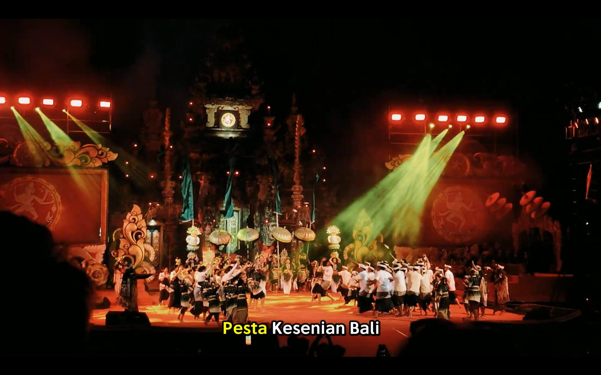
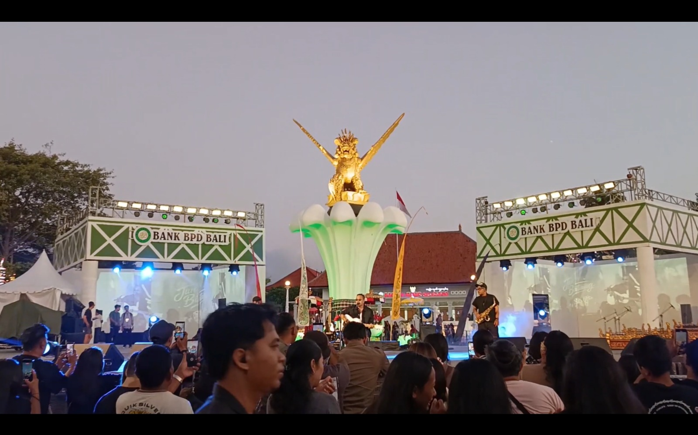

Daftar Karya Video
Karena file video nya berat, disarankan menonton dengan klik opsi Buka di Instagram.

Ganesha Kelana #1 Pesta Kesenian Bali Tahun 2026
Pesta Kesenian Bali (PKB) adalah parade, eksibisi, dan festival kesenian tahunan terbesar di Bali yang menjadi puncak perayaan budaya sekaligus wadah utama bagi para seniman lokal untuk melestarikan, menggali, dan mengembangkan nilai-nilai seni budaya luhur masyarakat Bali.Festival ini menjadi salah satu daya tarik wisata budaya utama karena mempertemukan seluruh elemen kesenian dari 9 kabupaten/kota di Bali, serta partisipasi dari luar daerah hingga luar negeri.
Buka di Instagram ↗
Ganesha Kelana #2 Buleleng Festival Tahun 2026
Buleleng Festival (Bulfest) adalah perhelatan seni, budaya, dan ekonomi kreatif terbesar di wilayah Bali Utara. Festival tahunan yang diselenggarakan oleh Pemerintah Kabupaten Buleleng ini bertujuan untuk melestarikan warisan leluhur, mempromosikan potensi daerah, serta menjadi motor penggerak ekonomi bagi masyarakat lokal.
Buka di Instagram ↗